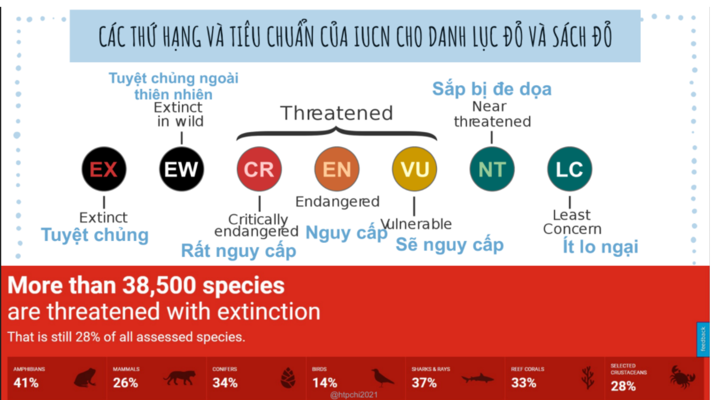
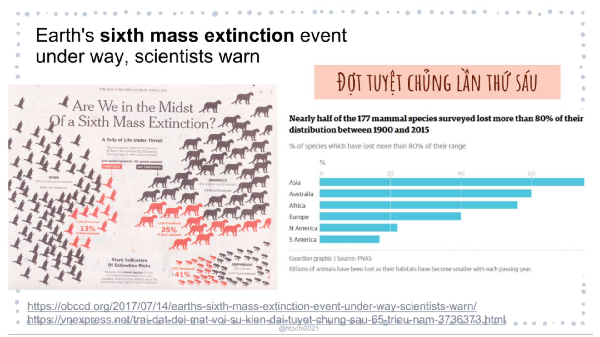
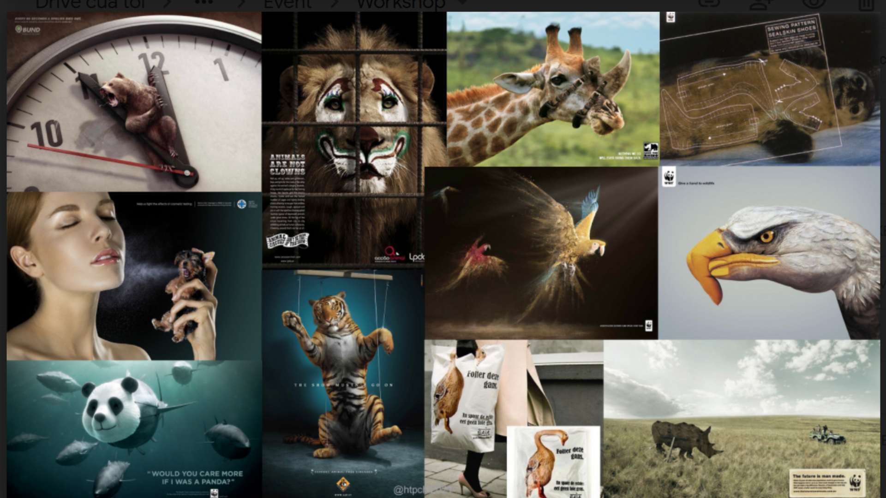

Con người và các loài động vật hoang dã
2.10.2021
Các “giá trị” của động vật đối với con người
- Giá trị sử dụng (hay giá trị kinh tế) như các sản phẩm: nhu yếu phẩm, thuốc men, các chất bảo vệ nông nghiệp mà con người khai thác được từ thiên nhiên
- Giá trị nghiên cứu khoa học và nghỉ dưỡng như: nghiên cứu môi trường, nghiên cứu y học và hoạt động du lịch
- Giá trị văn hóa tinh thần như thơ, ca, nhạc, họa đồ dùng thiết bị lấy cảm hứng từ thiên nhiên
- Giá trị sinh thái: bảo tồn nguồn gen, bảo tồn loài, đóng góp đa dạng sinh học, giúp hệ sinh thái cân bằng, bảo vệ sinh thái
- Giá trị kế thừa (giá trị tồn tại) để dành cho các thế hệ sau
Những mối đe dọa cho ĐVHD ở Việt Nam
- Hoạt động săn bắt trái pháp luật.
- Thu hẹp sinh cảnh
- Tiêu thụ, buôn bán ĐVHD và các sản phẩm từ ĐVHD trái pháp luật
- Ô nhiễm môi trường và biến đổi khí hậu
Những mối đe dọa này cộng với việc một số VQG và KBT vẫn chưa chú trọng hoặc chưa làm tốt công tác bảo vệ đã khiến cho tình trạng của các loài ĐVHD ngày càng tồi tệ hơn.
Các thứ hạng và tiêu chuẩn của IUCN cho danh lục đỏ và sách đỏ


